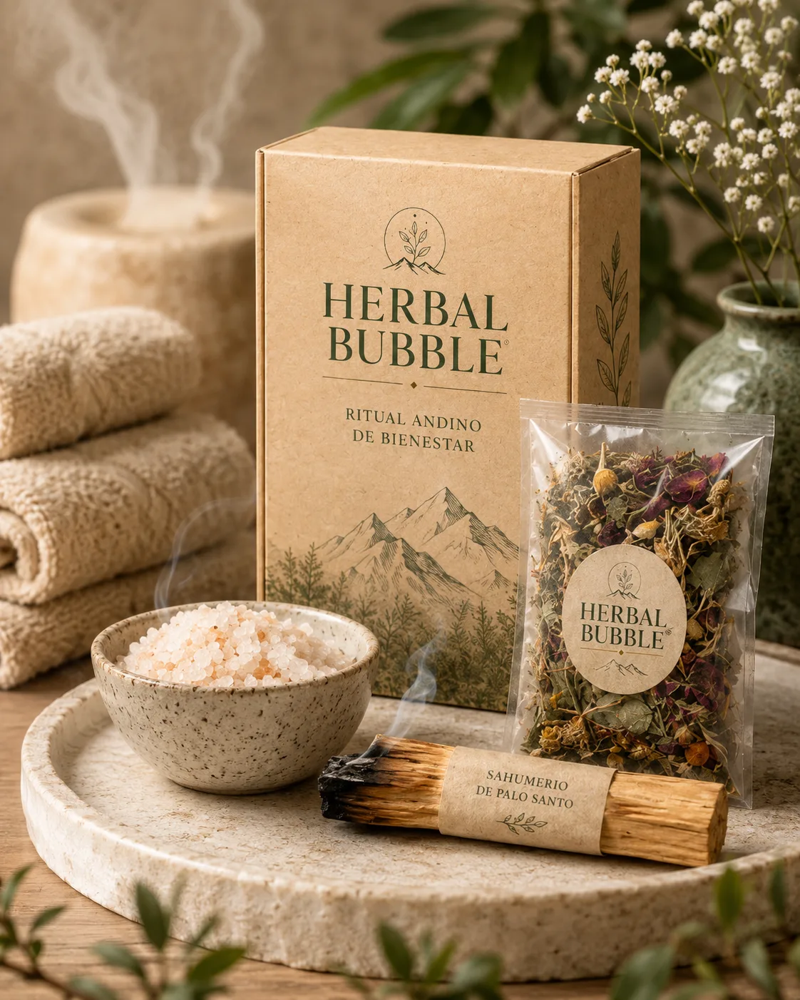
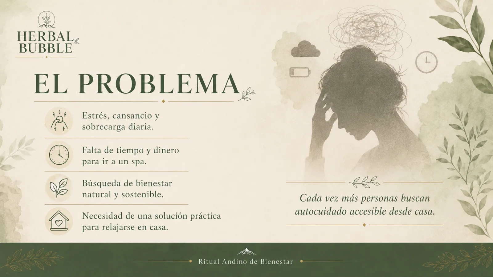
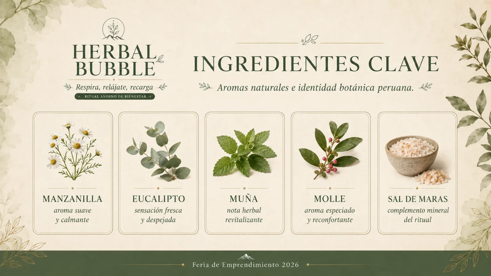
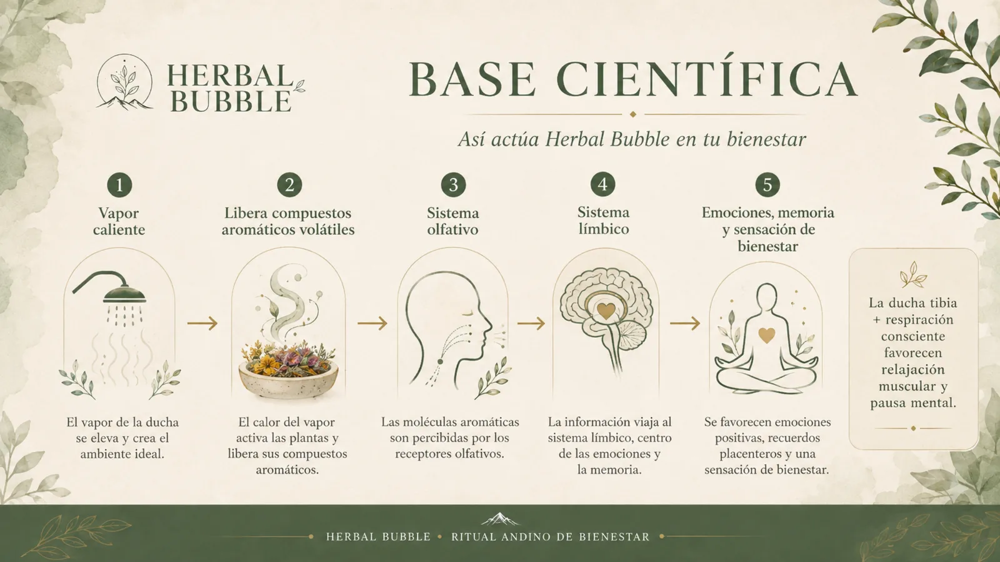
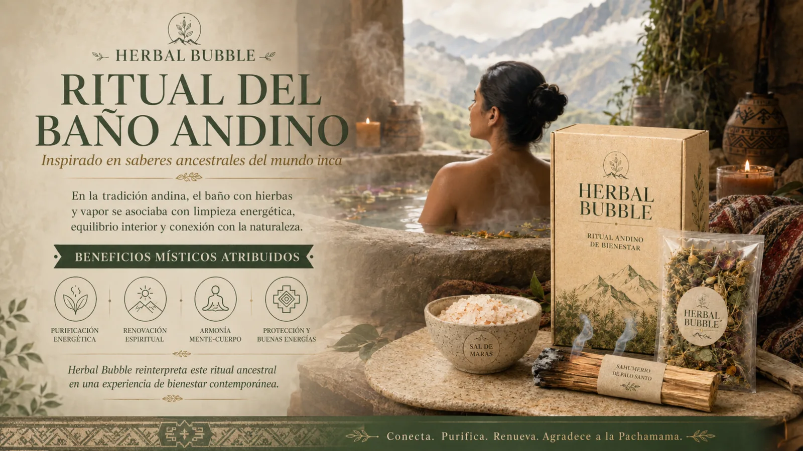
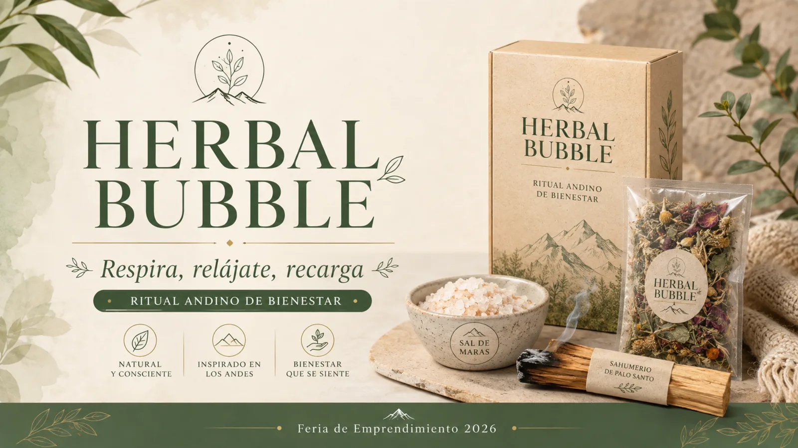
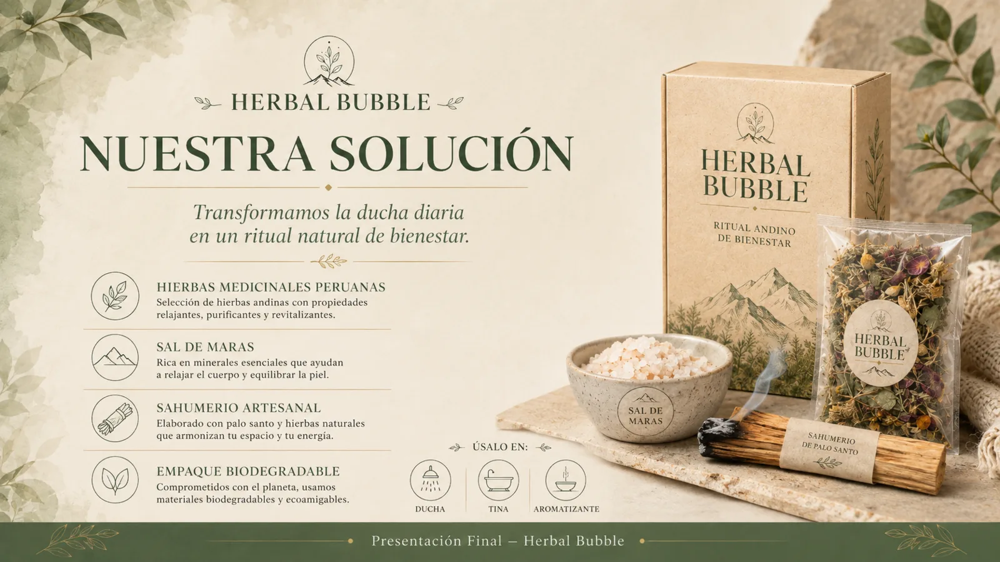
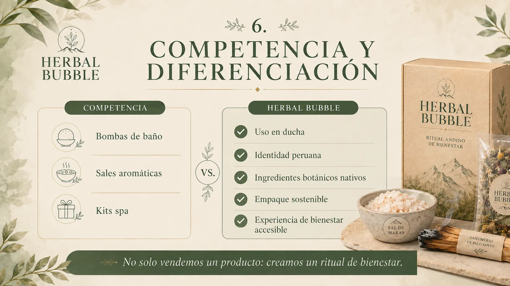
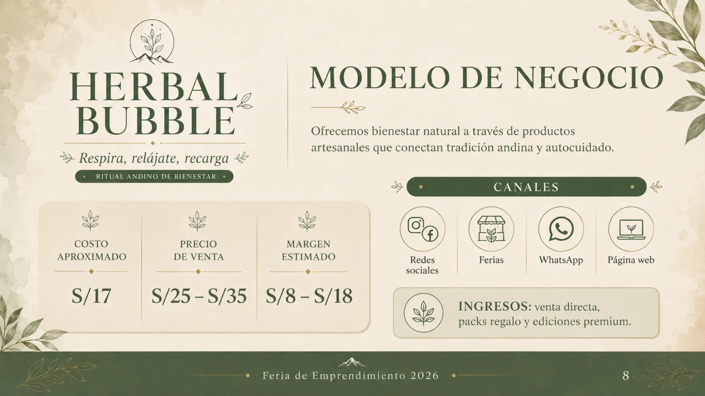
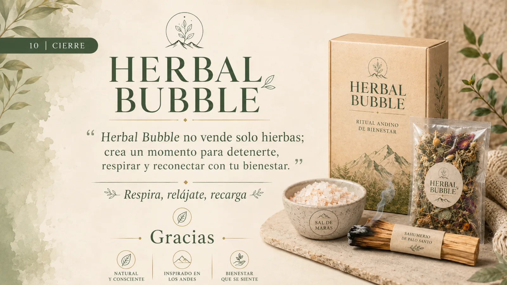

Sobrecarga cotidiana
Jornadas intensas y dificultad para desconectarse.
FERIA DE EMPRENDIMIENTO 2026
Transformamos una ducha cotidiana en una experiencia sensorial inspirada en los Andes, combinando plantas peruanas, Sal de Maras y un ritual de autocuidado accesible desde casa.

01 · EL PROBLEMA
Estudio, trabajo y responsabilidades pueden generar estrés, cansancio y sensación de sobrecarga. Al mismo tiempo, no todas las personas disponen de tiempo o presupuesto para acudir con frecuencia a un spa.
Jornadas intensas y dificultad para desconectarse.
La relajación suele quedar al final de la lista.
Existe interés por experiencias simples, sostenibles y fáciles de integrar en casa.

02 · NUESTRA SOLUCIÓN
Herbal Bubble propone un kit físico pensado para transformar el momento de la ducha en una pausa sensorial inspirada en la tradición botánica peruana.
Hierbas aromáticas peruanas seleccionadas para aportar notas suaves, frescas y herbales.
Integra una referencia cultural peruana y funciona como complemento del ritual.
Palo santo y componentes naturales para acompañar la experiencia ambiental.
Caja ecológica y bolsa de hierbas con una presentación pensada para regalo.
Usa la mezcla durante una ducha tibia, en tina o como aromatizante. El calor ayuda a liberar los compuestos aromáticos de las plantas y crea una experiencia olfativa más intensa.
Prepara el ambiente
Activa el aroma con vapor
Respira conscientemente
03 · INGREDIENTES CLAVE
El concepto combina aromas conocidos y una narrativa local para construir una experiencia coherente, memorable y fácil de explicar.

04 · EXPERIENCIA SENSORIAL
La propuesta se apoya en una secuencia sencilla: el vapor caliente favorece la liberación de compuestos aromáticos volátiles; estos son percibidos por el sistema olfativo y se integran a una rutina de respiración consciente y relajación.
La ducha tibia crea el entorno de uso.
Las plantas liberan notas volátiles.
El aroma es percibido por receptores olfativos.
Respiración consciente y momento de autocuidado.

Herbal Bubble se presenta como una experiencia de bienestar y autocuidado. No reemplaza atención médica ni pretende diagnosticar o tratar condiciones de salud.
05 · DIFERENCIACIÓN
Frente a bombas de baño, sales aromáticas y kits de spa genéricos, Herbal Bubble integra uso práctico en ducha, narrativa peruana y una presentación lista para regalar.
Alternativas comunes
Herbal Bubble

06 · PÚBLICO OBJETIVO
Principalmente personas de 18 a 40 años, estudiantes, trabajadores y consumidores interesados en bienestar, naturaleza, diseño y productos sostenibles.
Buscan una pausa después de jornadas intensas de estudio.
Valoran soluciones prácticas para desconectarse al llegar a casa.
Prefieren detalles con historia, estética y utilidad.
Se interesa por experiencias naturales y marcas con propósito.
07 · MODELO DE NEGOCIO
por unidad
según presentación
antes de otros gastos
redes, ferias, WhatsApp y web
Instagram, TikTok, Facebook, WhatsApp, ferias de emprendimiento y esta página web como vitrina digital.
Venta directa del kit, packs regalo, ediciones temáticas, presentaciones premium y futuras mezclas aromáticas.
Validar preferencias, medir intención de compra, probar nuevos aromas y construir alianzas con tiendas de bienestar.
08 · IDENTIDAD VISUAL
Crema, verde botánico y kraft construyen una estética que mezcla naturaleza, ritual y origen andino.




09 · CONVERSEMOS
Déjanos tu opinión. Este formulario está pensado para validar interés, recibir comentarios y conocer qué versión del producto genera mayor intención de compra.
HERBAL BUBBLE
Conecta. Respira. Renueva.
Volver al inicio